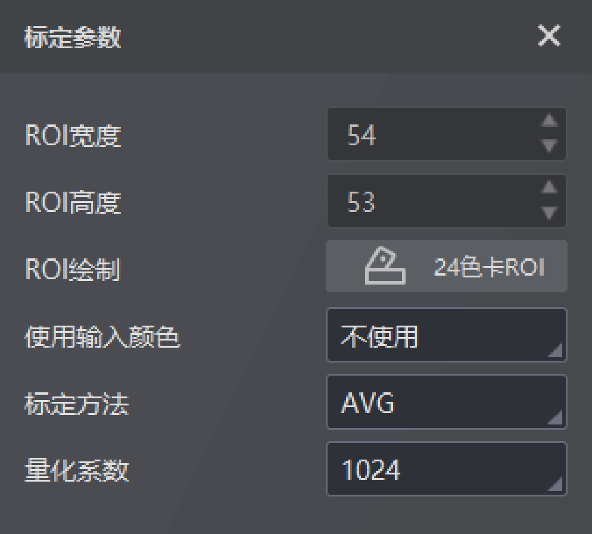

白平衡模块可用于纠正偏色，使不同光源条件下画面呈现的色彩与人眼观看的色彩相近。
使用白平衡模块时可先进行标定再校正，也可省略标定过程，点击直接校正获取校正参数。
白平衡需对校正前图像绘制24色卡ROI，且可通过ROI宽度和ROI高度对单个ROI的宽度和高度值进行调整，具体可参考图像降噪章节。还需对以下参数进行设置：
不使用：无输入颜色。
原始颜色：点击原始颜色并选择需导入的txt文件，或者点击增加行并选择原始颜色进行添加。
txt文件记录颜色格式的要求：一行代表一个颜色，按照r,g,b的格式写入，不允许有空白行。
输入颜色过程中如需删除，可点击删除行。
可选AVG（平均法）、SOLVE（解析法）。
可将白平衡矩阵中的数值整数化，便于进行计算。设置后白平衡矩阵中的数值会随之改变。

图 1 白平衡标定参数